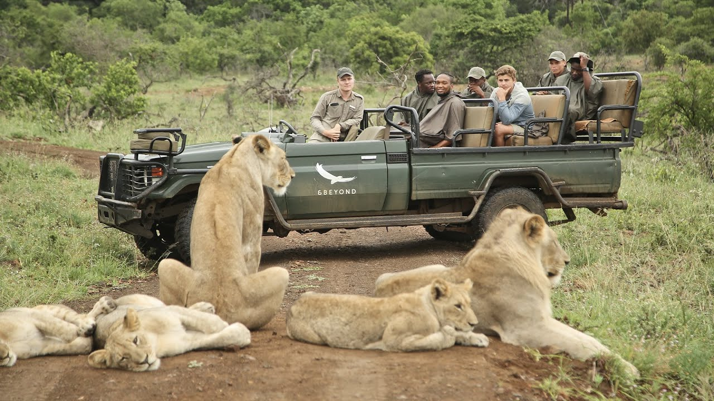
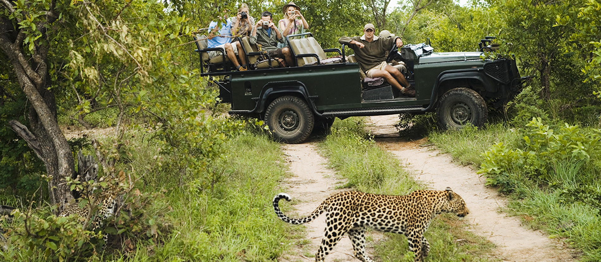
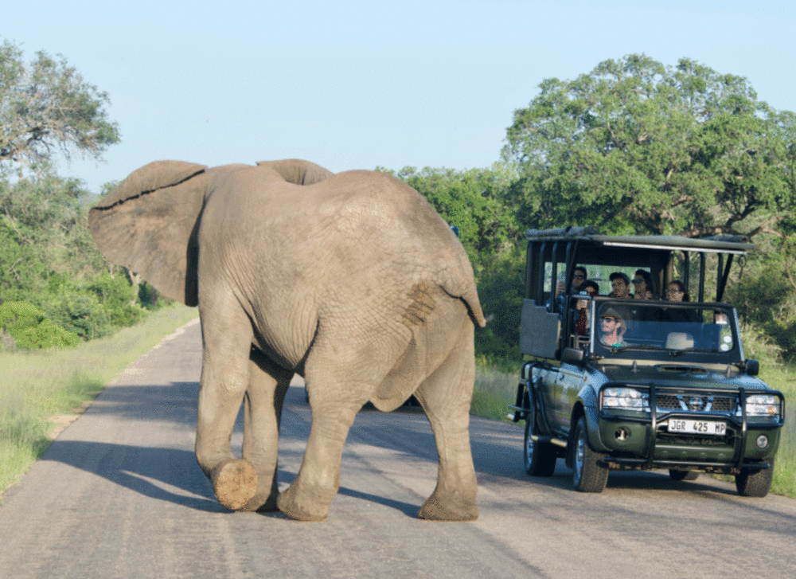
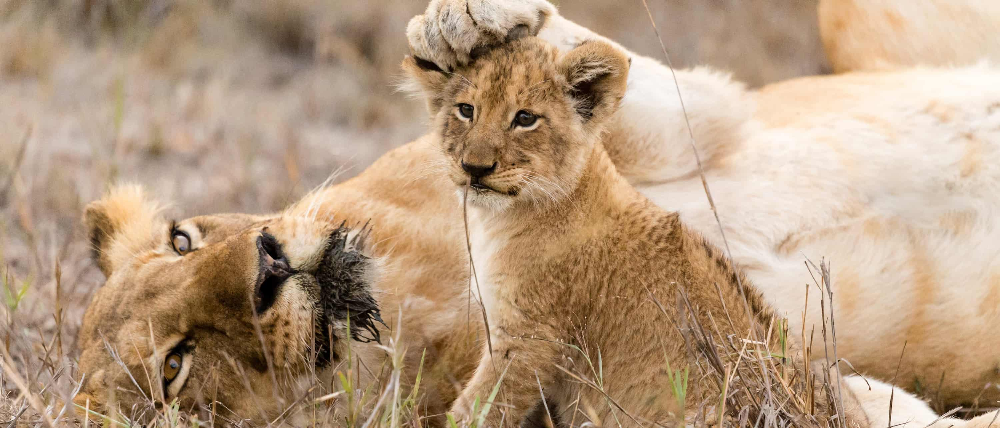
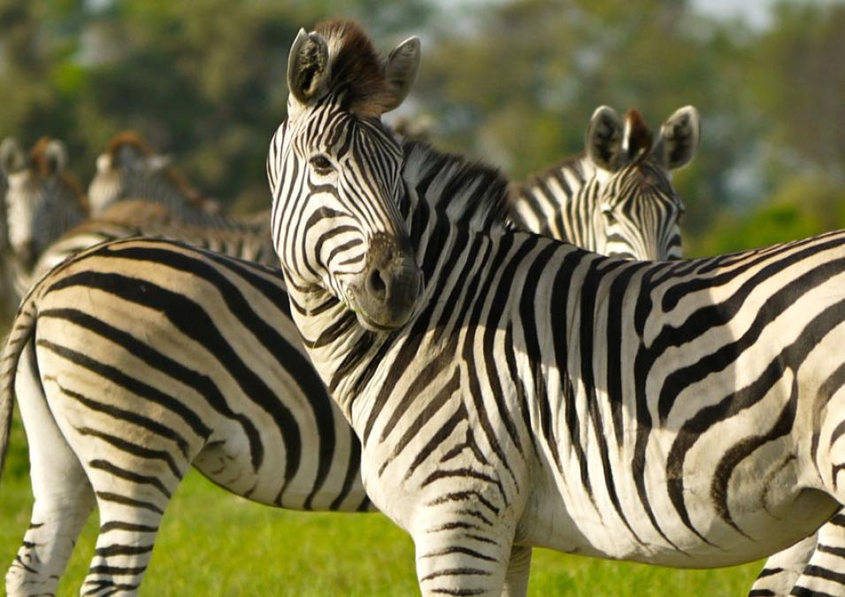
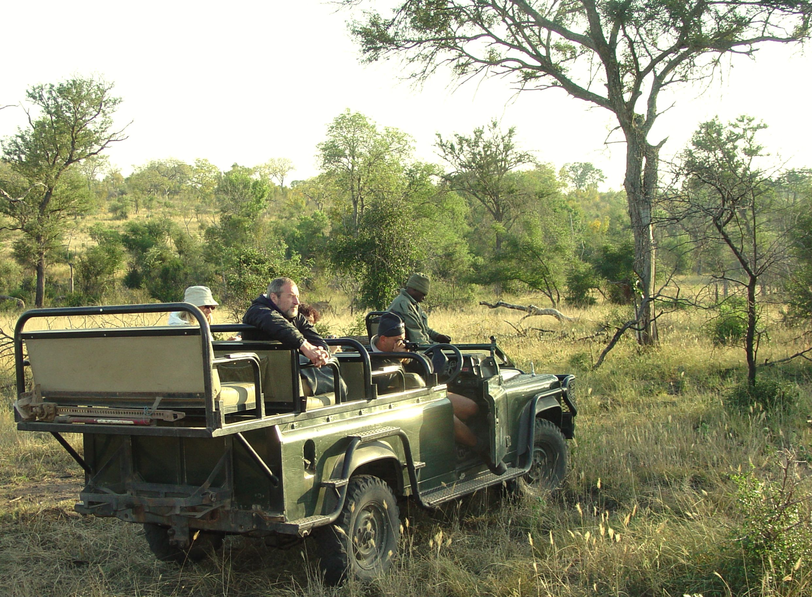

CrabMen Adventures is a premier tour company specializing in curated travel experiences for individuals, families, and groups. With a passion for exploration and a commitment to quality service, we offer guided tours to some of the world’s most stunning destinations. From cultural city walks to thrilling outdoor excursions, our expertly planned itineraries ensure a memorable and hassle-free journey for every traveler.
We have done over 1k+ safaris across different destinations in the world.We are specializing in giving customers satisfactory user experiences across the globe by delivering quality safaris .Here are Some of our Photos:






Crabmen Safaris is a premier tour company offering unforgettable adventures across East Africa’s most iconic destinations, including Kenya, Tanzania, and Uganda. Specializing in expertly guided wildlife safaris, cultural tours, and personalized travel experiences, we are passionate about connecting travelers with the region's rich biodiversity and vibrant heritage. Whether you're tracking the Big Five in the Maasai Mara, witnessing the great wildebeest migration in the Serengeti, or exploring the lush rainforests of Uganda in search of mountain gorillas, Crabmen Safaris delivers journeys that blend comfort, safety, and authenticity. Our dedicated team ensures every itinerary is tailored to your interests, making each adventure a unique and meaningful story worth sharing.
We’d love to hear from you and help plan your next unforgettable adventure with Crabmen Safaris. Whether you have questions about our tour packages, need help customizing your itinerary, or simply want to learn more about the incredible destinations we cover, our friendly team is here to assist you. You can reach us via phone, email, or by filling out the contact form on our website. We aim to respond promptly and ensure you receive all the information you need to start your journey with confidence. Let Crabmen Safaris be your trusted guide to the wild beauty of East Africa!